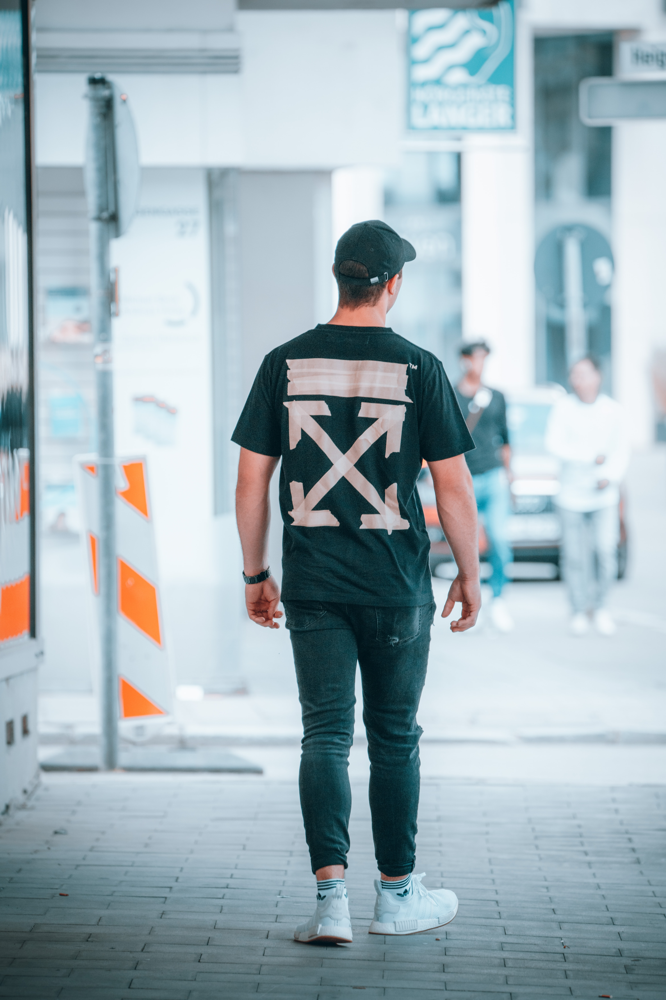

Alternating Parallel Diagonal Lines,Three-Dimensional Addition Of Four-Way Arrows
Abloh also included a three-dimensional addition of his four-way arrows, creating a cross, on the front of the tops and pants. The originality of Off-White's logo design with its alternating parallel diagonal lines has been contested by a number of parties, including Ben Kelly, who popularized this graphic in the early 1980s